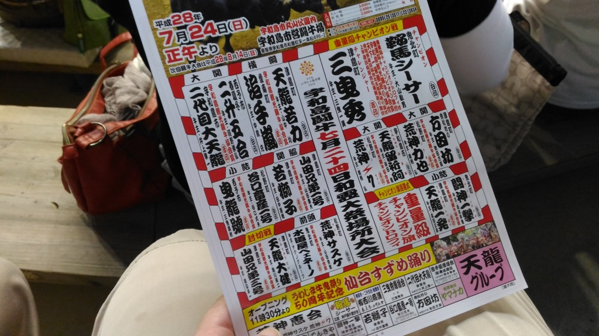

宇和島：闘牛と牛鬼祭りを見てきた
執筆日時：
7月24日、かねてから観たいと思っていた闘牛見物に宇和島まで出かける。闘牛を観るのは生まれて初めてかも。
牛と牛が戦う競技は、牛相撲、牛突き、牛の角突きなどと呼ばれ、岩手県久慈市、新潟県二十村郷（長岡市、小千谷市など）、島根県隠岐島、愛媛県宇和島市、鹿児島県徳之島、沖縄県うるま市などで行われている。1988年までは東京都八丈島でも行われていたが、現在は行われていない。
以下に記述するスペインなどの闘牛とは異なり、むしろ闘犬に近く、相撲のような競技である。大相撲のような番付により牛の優劣が格付けされる場合もある。また新潟の牛の角突きでは勝負付けを行わず、引き分けにさせる。
宇和島では小高い山の上に市営の闘牛場が設けられている。丸山公園というのかな？ よくは知らない。
宇和島市には和霊土俵という闘牛場が存在したが、第二次世界大戦後にGHQによって闘牛が禁止された。その後宇和島の闘牛は復活したが、レジャーの多様化により再び存続の危機となり、打開策として1950年代後半から1960年代前半にかけて「南予闘牛振興会」（宇和島市）、「南宇和郡闘牛組合」（南宇和郡）が設立された。1975年、丸山公園内に宇和島市営闘牛場が完成した。ドーム型の闘牛場は全国でも珍しく、年に5回行われる定期闘牛大会、毎年4月29日に行われる日本相撲連盟主催の全日本大学選抜相撲宇和島大会、そして観光闘牛のために使用されている。
僕らは歩いて行ったが（宇和島駅から30分足らずか）、無料のバスがあるとかないとか。まぁ、いい運動になったから問題ないけど、ちゃんと事前に調査しておくと、現地で苦労しなくていいかも。
道中は見晴らしがよく、宇和島城の天守閣が望めたのはうれしかった。道はさして難しくない。道中に行き先を示す看板が立っているし、おばあちゃんが親切に教えてくれた。

僕らが見に行ったのは牛鬼祭りと併催される和霊神社への奉納大会。和霊神社（われいじんじゃ）というのは宇和島で割と大きめの神社っぽくて、牛鬼祭りの舞台にもなっている。
不覚にも望遠レンズの用意がなかったので、スマートフォンのデジタルズームだけど……牛さんたちは相撲みたいに東西で番付されていて、だいたい似たような力をもつ者同士が戦うみたい。牛は沖ノ島や奄美の方の島からきた子が多いようだった。
牛が場内に引き出されるときは、鼻息が重低音で響き渡り、なかなかの迫力。角を突き合わせると鼻輪が解かれ、取り組みが始まる。双方の牛には勢子が付き、独特な掛け声（人によって異なるようだ）で牛をけしかけ、戦わせる。1つの取り組みでかかる時間は、人間より少し長い。今回の最長は25分ぐらいだった。戦意喪失した側が負けのようで、片方がお尻を見せて逃げ出すと終わり。勢子が総動員で2匹を引き離し、鼻輪をとおして退場となる。
ジリジリと押し引きが続く戦いも面白いが、やはり「角使いがうまい」（場内による解説）牛同士の戦いが迫力あってよい。角が交差する乾いた音と、頭蓋骨がぶつかり合ったのか、低いゴツンという音が円形の闘牛場に響き渡り、「オォー……」とため息とも感嘆とも取れぬ、何とも言えないどよめきが湧く。牛が目まぐるしく体を変え、攻守が入れ替わる。唾をのむ暇もない。なかにはハッスルしすぎたのか、ウンチを漏らしながら戦う牛も（笑
ただ、ときどき取組が始まる前に片方が尻込みしてしまい、戦いが始まらないことも。こうなると取り組みにはならないようで、早々に勝負結果が伝えられる。当日は最後から2番目の取り組み、横綱戦でも不戦勝が発生してしまい、場内からはヤジが飛ぶ有様。
しかし、最後の重量級の戦いはさすがに圧巻だった。正味5分程度だったと思うが、どちらにも勝機があるように見えた。結果は不敗のチャンピオンをチャレンジャーが破るという劇的な幕切れ。
最後は新しいチャンピオンとの記念撮影で場内がひっちゃかめっちゃかになっていて面白かった。
そのあとはまた宇和島駅に戻って、牛鬼祭りを見物。
牛鬼（うしおに、ぎゅうき）
— 日本妖怪図鑑 (@nihon_youkai) 2016年7月6日
牛の頭に蜘蛛の体を持つ妖怪。毒を吐き、人を主食としている。牛鬼は不滅で、仮に殺そうものならその殺したものが牛鬼になり替わる。ある意味最強の妖怪。 pic.twitter.com/sNnNtVsCQq
牛鬼というのは西日本にいた妖怪なのだとか。牛鬼祭りはこの牛鬼伝説と、朝鮮の役で加藤清正（の部下）が考案したという攻城兵器「亀甲車」（亀甲船のパクリか何かかな？）の伝来が組み合わさったみたい。「亀甲車」ならぬ「牛鬼車」をみんなで引き回して練り歩く感じ。首の部分は上下に稼働する仕組みになっていて、威嚇だか、城壁をつんつんして壊すんだかするんだろうな。知らんけど。
「和霊大祭・うわじま牛鬼まつり」最終日の２４日、恒例の親牛鬼パレードがあり、２１体の牛鬼が長い首を振りながら愛媛県宇和島市中心部の商店街から和霊神社にかけて練り歩いた。和霊神社前の須賀川では夜、走り込みがあり、５０周年のフィナーレを飾った。
フィナーレの“走り込み”は地元の居酒屋さんでまったりとテレビで楽しみました(n*´ω`*n)